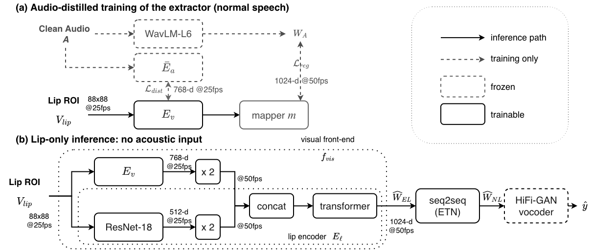

Lip-Driven Voice Conversion for Mandarin Electrolaryngeal Speech
1Department of Electrical Engineering, Yuan Ze University, Taiwan
2Institute of Information Science, Academia Sinica, Taiwan
3Research Center for Information Technology Innovation, Academia Sinica, Taiwan
Submitted to ICASSP 2027
Abstract
Can lip motion alone replace the damaged EL signal?
Previous audio-driven approaches (Audio VTN [1], Audio ETN [2]) and our proposed system share the same seq2seq back-end and the same WavLM HiFi-GAN vocoder. The only thing that changes across these systems is what the back-end reads: WavLM features from the damaged EL waveform, or WavLM features predicted from the silent lip video. The prior audio-visual system (AVH-WS-FT [3]) is a separate, complete pipeline with its own back-end and vocoder. It also extracts its visual features with a fine-tuned AV-HuBERT [4], so the visual backbone is not what separates it from ours; the difference is that it additionally reads the EL waveform, while ours reads the video only. Watch the EL silent lip ROI column first. That is the entire input to our proposed system.
Proposed pipeline

A trainable AV-HuBERT [4] visual extractor, distilled from an audio teacher on normal speech (TMSV [5]), is fused with a lip encoder (3D convolution, ResNet-18, Transformer layers). The fused front-end predicts the WavLM-Large (layer 6) features of the EL recording made at the same moment.
An autoregressive Transformer (VTN / ETN recipe) converts the predicted features toward the target normal speaker and absorbs the duration mismatch, since EL speech is slower. It is initialized from the audio ETN [2] baseline and fine-tuned end to end with the front-end on 240 parallel pairs. The back-end and the audio baselines are built on the open-source seq2seq-vc toolkit.
A WavLM HiFi-GAN trained on COSPRO normal speech, kept frozen and shared by our audio baselines and our proposed system. It is never fine-tuned on our data and only ever generates normal speech.
Main results (40 held-out sentences, one speaker)
| System | Input Modality | CER ↓ | SER ↓ |
|---|---|---|---|
| Natural NL speech (ceiling) | — | 2.3 | 1.0 |
| Unprocessed EL speech | A | 74.0 | 70.3 |
| Audio VTN [1] | A | 69.5 | 66.0 |
| Audio ETN [2] | A | 66.5 | 62.5 |
| ResNet front-end only | V | 82.8 | 80.0 |
| AVH extractor only | V | 67.3 | 64.5 |
| Proposed (both pathways) | V | 62.3 | 57.5 |
| Proposed, extractor frozen | V | 75.5 | 71.0 |
A: audio-driven, reads the EL waveform; V: video-driven, no acoustic input at inference. Audio VTN and Audio ETN are our own reimplementations of [1] and [2] on WavLM features; VTN and ETN as published operate on mel spectrograms. CER from Whisper large-v3; SER over pinyin syllables with tone. The recognizer is not adapted to this speaker or to EL speech, so all rates are high. Compare rows, not absolute values.
Demo samples
Held-out TMHINT sentences, with Hanyu Pinyin under each transcript. The first two columns are the 88×88 grayscale lip ROI at 25 fps that the model reads, once muxed with the EL recording and once silent. The EL recording and the NL audio are two separate takes of the same sentence by the same speaker, so their lengths differ. AVH-WS-FT is the fine-tuned audio-visual system of Chien et al. [3], described above. Under every converted sample we print its CER / SER on that sentence and the text the recognizer heard, all from one deterministic re-decode of all systems with the settings below. The sentences are split into two comparisons. In each, the five sentences are ordered by the per-sentence CER gap between the compared system and ours, from our largest win, through a tie, to our largest loss; the gap is printed next to each sentence. We chose them this way on purpose. The paired confidence interval crosses zero against both Audio ETN and AVH-WS-FT, so a demo of only the favorable cases would overstate the result. The first comparison draws on all 40 test sentences; the second is limited to the 18 sentences for which the AVH-WS-FT outputs were available. The failure cases are also where the paper's error analysis points: onsets that the lips do not show. Whisper hears the converted speech in Mandarin; the CER and SER are computed on the Chinese characters and on the pinyin syllables.
Acknowledgements
This work builds on the seq2seq-vc toolkit by Wen-Chin Huang, which provides the VTN and ETN recipes and the seq2seq back-end that our audio baselines and our proposed system share. We are grateful to the author for releasing it.
References
- W.-C. Huang, T. Hayashi, Y.-C. Wu, H. Kameoka, and T. Toda, “Voice Transformer Network: Sequence-to-sequence voice conversion using Transformer with text-to-speech pretraining,” in Proc. Interspeech, 2020, pp. 4676–4680.
- M.-C. Yen, C.-H. Wu, S.-W. Tsai, J.-S. R. Jang, Y. Tsao, A. Hussain, and H.-M. Wang, “Mandarin electrolaryngeal speech voice conversion with speech encoder loss learning and seq2seq modeling,” IEEE Internet of Things Magazine, vol. 8, no. 4, pp. 22–28, 2025. doi:10.1109/IOTM.001.2500013
- Y.-L. Chien, H.-H. Chen, M.-C. Yen, S.-W. Tsai, H.-M. Wang, Y. Tsao, and T.-S. Chi, “Audio-visual Mandarin electrolaryngeal speech voice conversion,” in Proc. Interspeech, 2023.
- B. Shi, W.-N. Hsu, K. Lakhotia, and A. Mohamed, “Learning audio-visual speech representation by masked multimodal cluster prediction,” in Proc. ICLR, 2022. openreview.net/forum?id=Z1Qlm11uOM
- S.-Y. Chuang, H.-M. Wang, and Y. Tsao, “Improved lite audio-visual speech enhancement,” IEEE/ACM Trans. Audio, Speech, Lang. Process., vol. 30, pp. 1345–1359, 2022. doi:10.1109/TASLP.2022.3153265
BibTeX
@inproceedings{VTN,
author={Wen-Chin Huang and Tomoki Hayashi and Yi-Chiao Wu and Hirokazu Kameoka and Tomoki Toda},
title={{Voice Transformer Network: Sequence-to-Sequence Voice Conversion Using Transformer with Text-to-Speech Pretraining}},
year=2020,
booktitle={Proc. Interspeech},
pages={4676--4680},
}
@ARTICLE{ETN,
author={Yen, Ming-Chi and Wu, Chia-Hua and Tsai, Shu-Wei and Jang, Jyh-Shing Roger and Tsao, Yu and Hussain, Amir and Wang, Hsin-Min},
journal={IEEE Internet of Things Magazine},
title={Mandarin Electrolaryngeal Speech Voice Conversion with Speech Encoder Loss Learning and Seq2seq Modeling},
year={2025},
volume={8},
number={4},
pages={22-28},
doi={10.1109/IOTM.001.2500013}
}
@inproceedings{AVVC,
author = {Chien, Yung-Lun and Chen, Hsin-Hao and Yen, Ming-Chi and Tsai, Shu-Wei and Wang, Hsin-Min and Tsao, Yu and Chi, Tai-Shih},
title = {Audio-visual Mandarin electrolaryngeal speech voice conversion},
booktitle = {Proc. Interspeech},
year = {2023}
}
@inproceedings{AVHUBERT,
title={Learning Audio-Visual Speech Representation by Masked Multimodal Cluster Prediction},
author={Bowen Shi and Wei-Ning Hsu and Kushal Lakhotia and Abdelrahman Mohamed},
booktitle={Proc. ICLR},
year={2022},
url={https://openreview.net/forum?id=Z1Qlm11uOM}
}
@article{TMSV,
author = {Chuang, Shang-Yi and Wang, Hsin-Min and Tsao, Yu},
title = {Improved Lite Audio-Visual Speech Enhancement},
year = {2022},
volume = {30},
doi = {10.1109/TASLP.2022.3153265},
journal = {IEEE/ACM TASLP},
pages = {1345--1359}
}